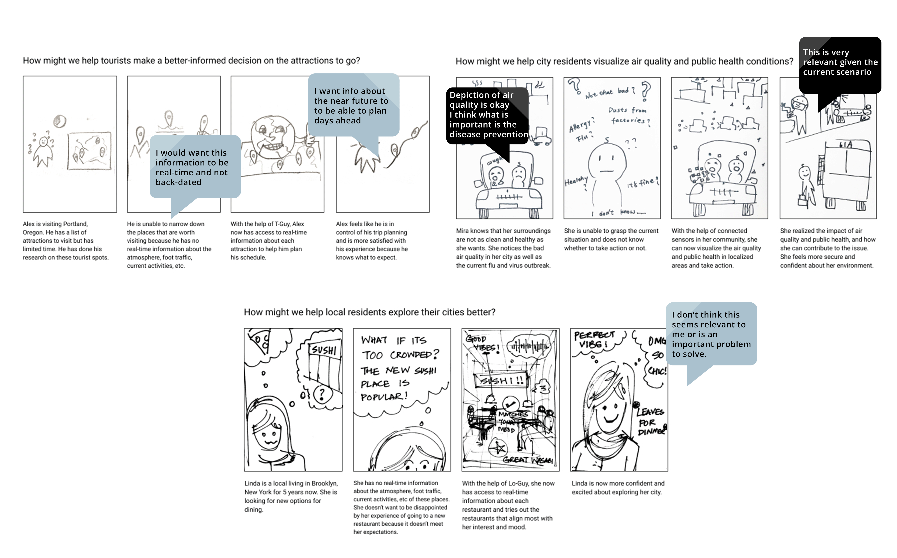
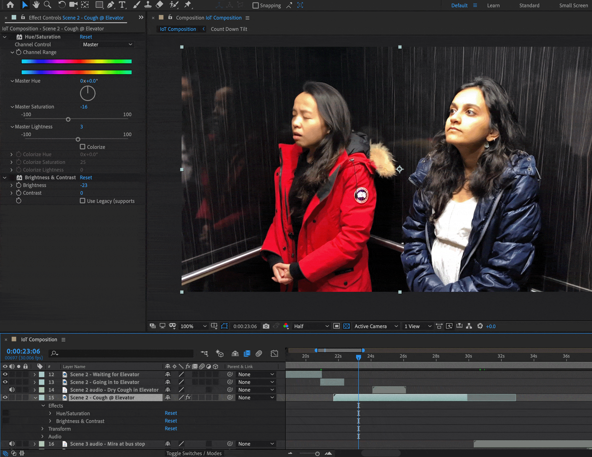
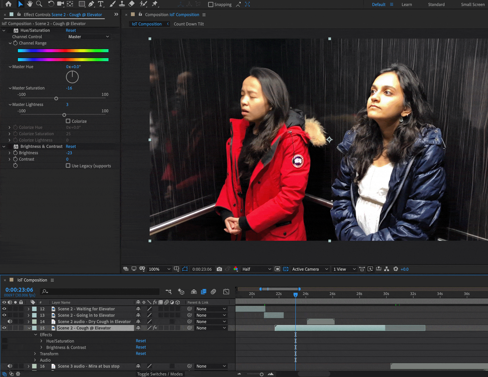

A project combining the internet of things technology with civic engagement aims to improve public health by raising awareness and promoting disease preventative methods and tactics.
Problem: How might we help give the public and healthcare professionals visibility into the health of the people in a neighbourhood in real time?
Solution: A network of reflective surfaces that monitors users and provides a clear visualization of the people of the neighbourhood’s health conditions, provides precise aggregation and analysis of health data to health care workers and public health departments and provides concrete suggestions of health habits and actions


We started the project by exploring different domains that involve civic engagement and could benefit from an internet of things technology. From our brainstorming session, we narrowed down on a system for air pollution detection to raise public health awareness and a system for city transportation & tourism.
We began by developing many different scenarios and finally zeroed in on the three scenarios below:
- Internet of Air Pollution Monitors for Environmental Awareness - With the use of the internet of glass surfaces for air pollution monitors, users are able to visualize the air quality of the city by mapping it directly to the view they see.
- Internet of City Sensors for City Tourism (Experience Tracking) - With the help of the internet of city tourism for experience tracking, tourists will be able to get real-time data about each attraction and have a more realistic expectation of what their experience could look like.
- Internet of Public Health Monitors for Communities - With an internet of health monitors, we can predict the rise of flu season or epidemics by thermal cameras (identify fevers), surveillance cameras and sound sensors (identify flu or other symptoms).
After testing the storyboards with other people and the feedback that we received on them, we decided to move forward with developing the idea for an IoT for public health monitor as it was perceived to be the most relevant idea and its actionable goals and concrete suggestions were well-received by users.
I worked on developing the script for the concept video and we decided to create an internet of reflective surfaces where the door handles would serve as the input devices to collect user data such as temperature, heart rate, etc. and any kind of reflective surfaces indoors or outdoors as the output devices.


Due to the pandemic situation and all academic instruction moving to working remotely we had to work on the post production entirely remotely. Having completed most of our filming before this move to working remotely. I was responsible for making the final edits on the concept video and adding the graphical overlays for our proposed internet of things technology.
Here are some of the challenges we faced while working on post production and how resolved them:
- Maintaining footage consistency - When we began video production, we used our storyboards as a reference for filming, and encountered several difficulties in keeping consistent lighting in the footage. Therefore, we had to make quick changes to our storyboards and modify our ending while we were shooting.
- Clarity in Storytelling - As we completed our rough cut, we noticed that our storyline lacked clarity. The footage alone could not tell our story the way we envisioned. Therefore, we modified the flow by adding in stock footage wherever there were gaps as well as we added a voiceover to better convey our concepts and tell a clear story.
 

Given the current pandemic, a system like this could be of immense help to public health departments and residents in giving them more visibility into the health of a neighbourhood and help track the health of its residents. However, in terms of scaling this system to a more personal level, it could be also implemented as wearable technology, like smartwatches and activity trackers. to monitor body temperatures and other vitals accurately and aggregate data effectively.